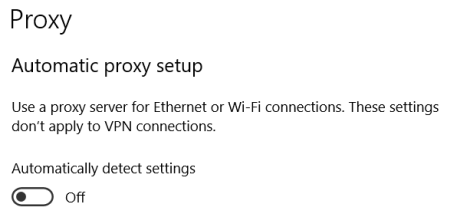

WPAD Spoofing/Poisoning
Prerequisites:• Target not patched with
MS16-077,
If the Target is patched we can try to make the attack via IPv6 as the described in the chapter
NTLM
Relay Attack(ipv6).
What is WPAD Organizations allow internet access through
Proxy Servers. The Web Proxy Auto-Discovery Protocol (WPAD) is a method used by clients to locate the URL of the
wpad.dat configuration file using DHCP and/or DNS discovery methods. Once detection and download of the
configuration file is complete, it can be executed to determine the proxy for a specified URL.
The
address of the server providing the wpad.dat file (which provides this information) would be resolved using DNS, and
if no entry was returned, the address would be resolved via insecure broadcast protocols such as Link-Local
Multicast Name Resolution (LLMNR).
In 2016 however, Microsoft published a security bulletin
MS16-077,
which mitigated this attack by adding two important protections:
◇ The location of the WPAD file is no longer
requested via broadcast protocols, but only via DNS.
◇ Authentication does not occur automatically anymore
even if this is requested by the server.
If the Target is patched we can try to make the attack via IPv6 as the
described in the chapter
NTLM
Relay Attack(ipv6).
If “Automatic Proxy setup” is enabled (below the Windows 10 settings):
 Attacker can act as a Web Proxy
Auto-Discovery Protocol (WPAD) Server(for example using the Responder utility).
If the attack has success
Responder will act as Web Proxy for the victims.
Bibliography:
•
https://www.ivoidwarranties.tech/posts/pentesting-tuts/responder/wpad/•
https://www.trustedsec.com/blog/wpad-man-in-the-middle-clear-text-passwords/